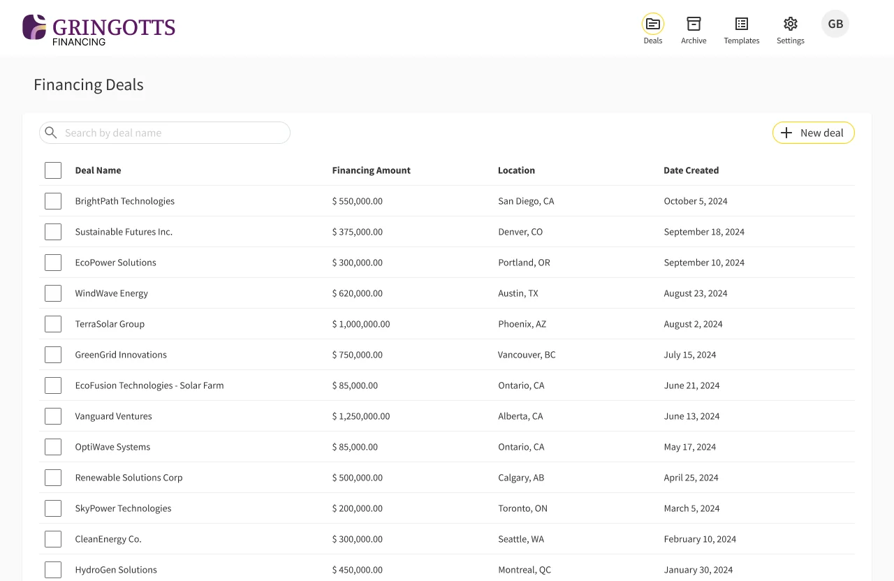
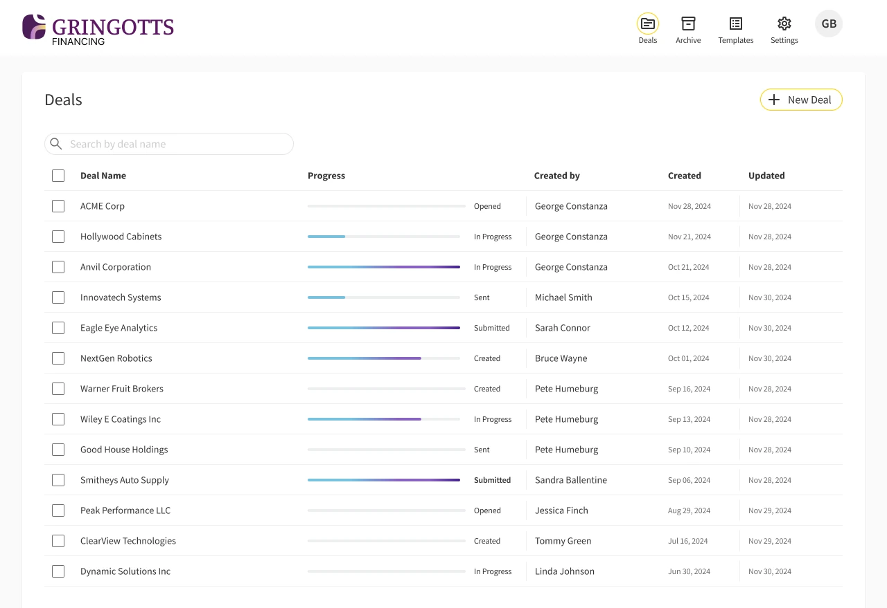
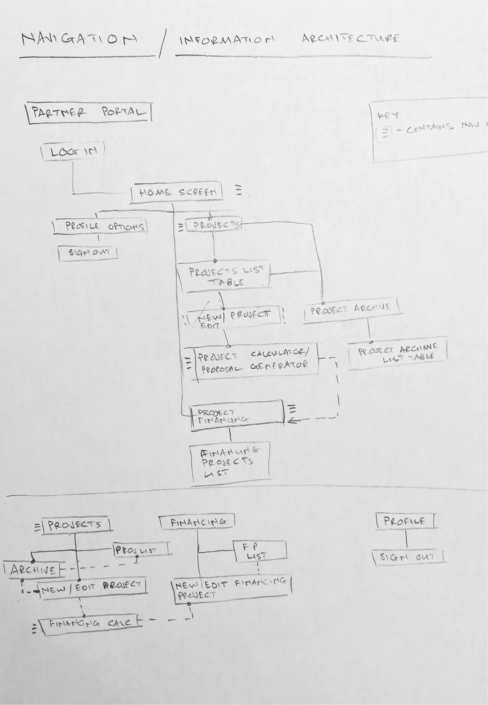
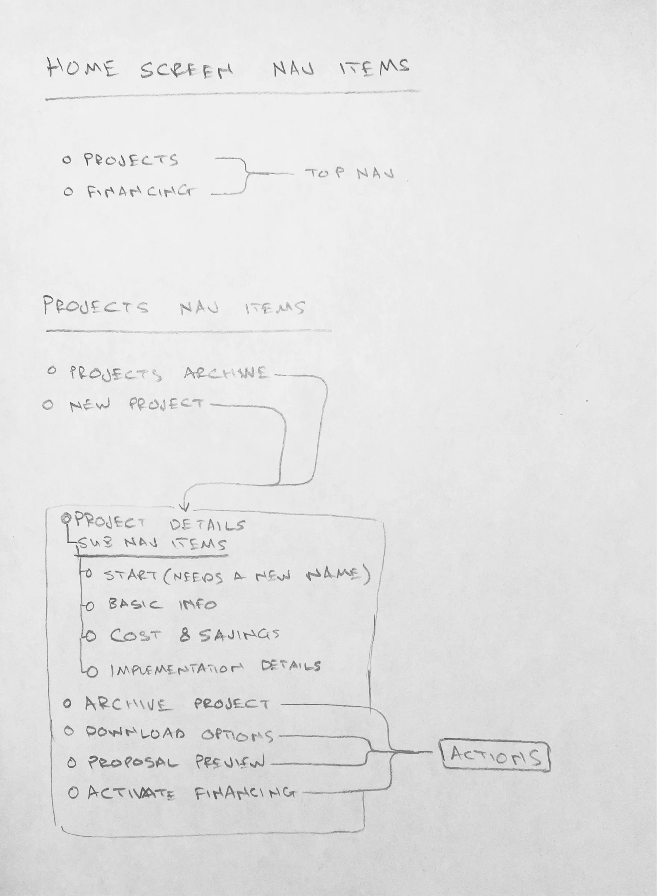
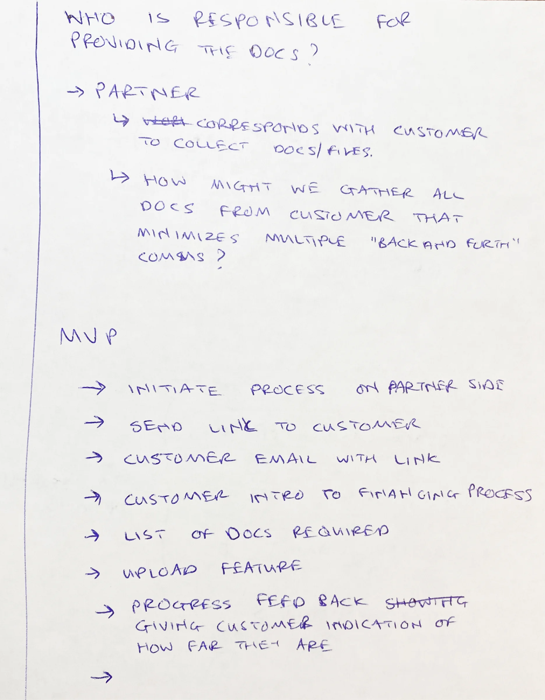
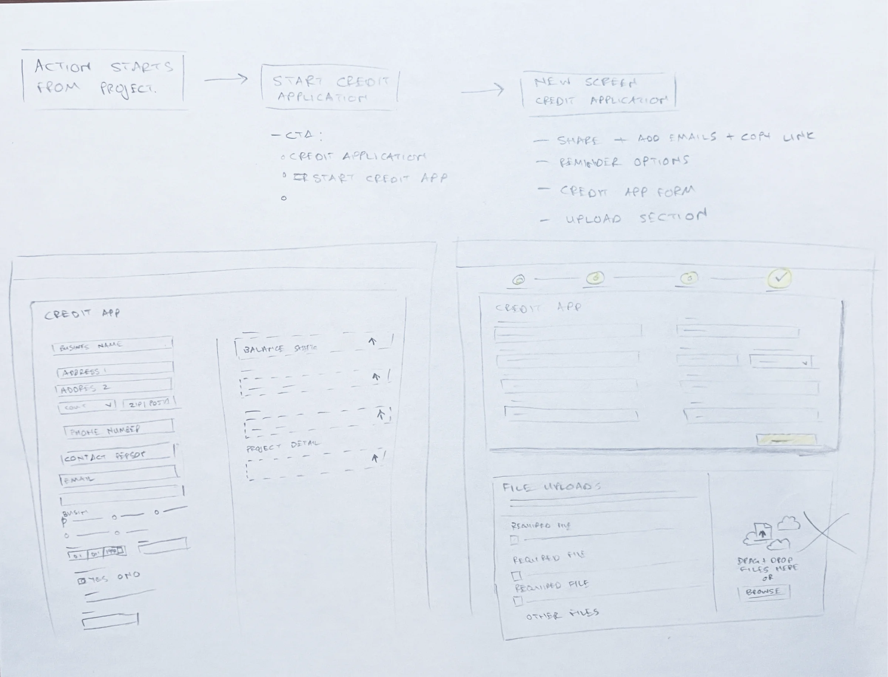
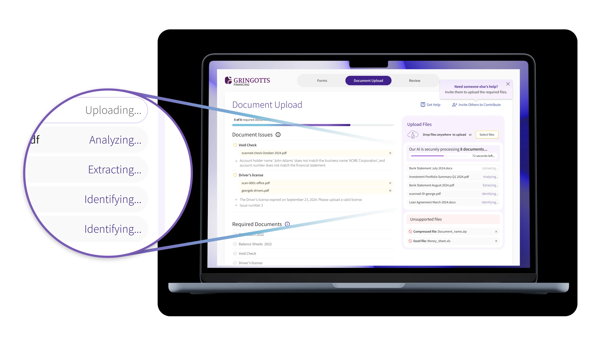
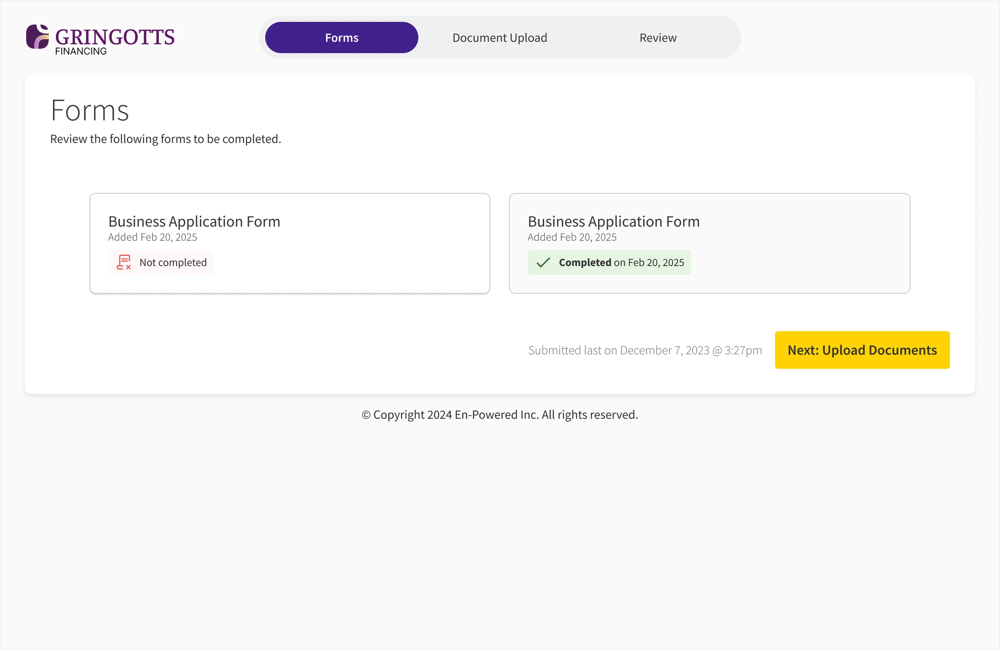
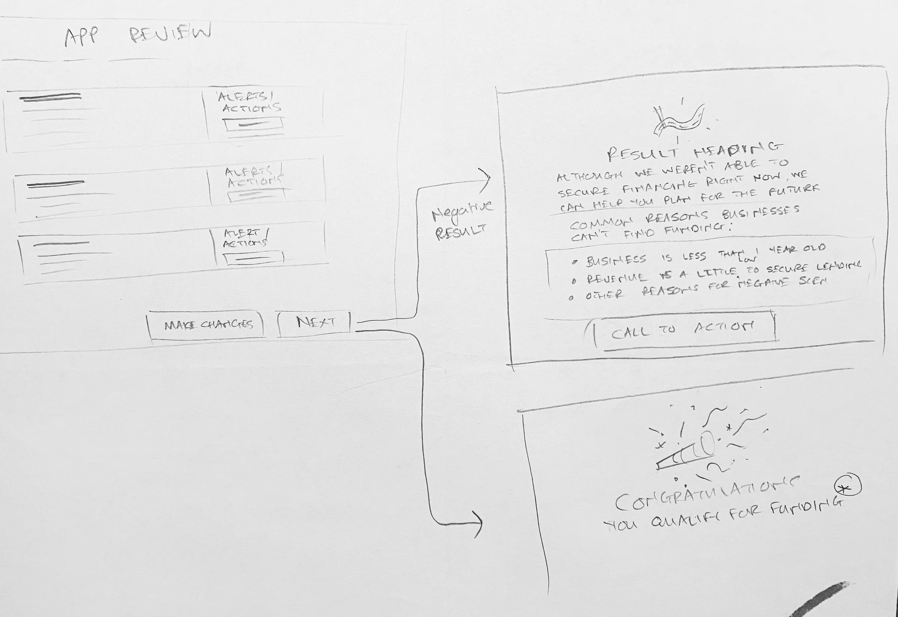

One dashboard replaced the email tsunami
Arlo is a lender portal I designed at EnPowered for commercial energy-upgrade financing. I was the only designer on a lean squad with a product manager and one to two engineers. Lenders were collecting loan documents over weeks of email, and nobody could see who owed what. We turned that into one dashboard where every document has an owner and a status, and collection dropped from 2–4 weeks to 1–2 days.

The lender's deal list. Each row shows how far the borrower has got, so nobody has to email to ask.
Weeks of chasing became a day or two
Once borrowers could see exactly what was missing, and lenders could see where every deal stood, most of the chasing stopped.
- Loan document collection went from 2–4 weeks to 1–2 days.
- 80% less back-and-forth between lenders and borrowers.
- 30% fewer handoff revision cycles. Our shared design system let engineers make low-impact design calls without waiting on a review from me.

Before: deal names and dollar amounts. Nothing told an analyst who had to act next.

After: a progress bar and a plain status on every deal, from Created and Sent through to Submitted.
The lender was the bottleneck, not the partner
When I joined, Arlo was built for energy partners, the middlemen selling the upgrades. Discovery showed the real hold-up was the lender. So we moved from a project view to a portfolio view. One lender might track 150 deals across 20 partners, and one deal might have a lead borrower, three business entities and two personal guarantors. I sketched how data rolls up from a person's tax return to a business's balance sheet before I opened Figma.

My first IA sketch, still shaped around the partner portal: projects first, financing second.

Nav and actions for a single project. The pivot meant reworking this around a lender's whole portfolio.
Faster reading didn't help if borrowers didn't know what to upload
Early on, the team was focused on AI document extraction. Our discovery pointed somewhere else. Documents weren't slow to read, they were slow to arrive, because borrowers didn't know what we needed. I pushed for a workflow-first MVP and worked it through with our product manager, who was also Arlo's founder. We agreed who starts a request, who tracks it, and that progress feedback was the main thing we were offering. The AI features further down sit on top of that loop.

The MVP list from that session. Look at the last real item: progress feedback that shows the borrower how far they are.

The first flow: start an application, share a link, set reminders, then a form and an upload area side by side.
Every document has a name, an owner and a next step
This is the screen that replaced the email thread. “A tax return” isn't specific enough in B2B lending, so requests are split by person: Suzie's 2023 tax return. Instead of a vague “Under review”, each issue says what's wrong and what to do, like an expired driver's licence. Automatic reminders sit in the sidebar, so the software does the nagging and the lender keeps the relationship.
One deal from the lender's side. Documents are grouped by business and by person, and issues sit at the top with the reason spelled out.

A red dot on Review means Arlo found something to check. A tooltip explains it the first time.

Arlo finds a likely business registry match and the lender confirms it in one click.

A new deal starts with two choices: import a document list from a template, or add items one by one.

When there's nothing to review, the screen just says so.
Borrowers could drop in a pile of files and walk away
Borrowers land on a page branded for their lender, not a generic file-sharing site, and follow three steps: forms, documents, review. We learned that making people rename or sort files caused drop-off, so they can drag in everything at once. Arlo reads, renames and sorts the files, shows what's still missing, and lets them leave while it works.
Read the short story: Designing for the wait →

Each file moves through Uploading, Analyzing, Extracting and Identifying, with a time estimate, while the borrower carries on.

The borrower's first screen: three steps, saved progress, and an email address to get back in.

Each form shows a plain status and date, and the next step is always the yellow button.

Problems rise to the top with the fix: the void check name doesn't match the business, the licence has expired.

Once issues are cleared, the same screen becomes a list of what's done, with room for extra documents.
A “no” still needs a way forward
In lending, the no matters as much as the yes. I mapped an empathetic decline: if revenue is too low, the screen explains why and offers help planning for next time, so a business we decline today can still be a customer later. The review step follows the same idea. When Arlo thinks a document is missing or wrong, the borrower can explain, or disagree with the analysis, instead of hitting a dead end.

Review leads to one of two outcomes. The decline path lists common reasons and still ends in a call to action.

Before submitting, the borrower can say why a document is missing, or that they disagree with Arlo's check.

When an answer is needed, the reason field is required and an “Almost done” list links to each open item.
Reminders do the chasing, so lenders don't have to
Lenders set up the nudging once. They connect their own email, so reminders come from a person instead of a no-reply address. They can rewrite the invitation and choose how often reminders go out. Reminders only send on weekdays between 9 and 5 in the time zone the lender picks, and they pause on their own when a borrower unsubscribes.
Read the short story: Reminders that sound like the lender →

Send every two days, weekdays 9 to 5, in a chosen time zone.

Lenders can rewrite the invitation. Text in square brackets becomes the secure upload link.

Lenders send from their own Google or Microsoft account, connected through OAuth.

Admins control who on the lending team can use Arlo, and with which role.